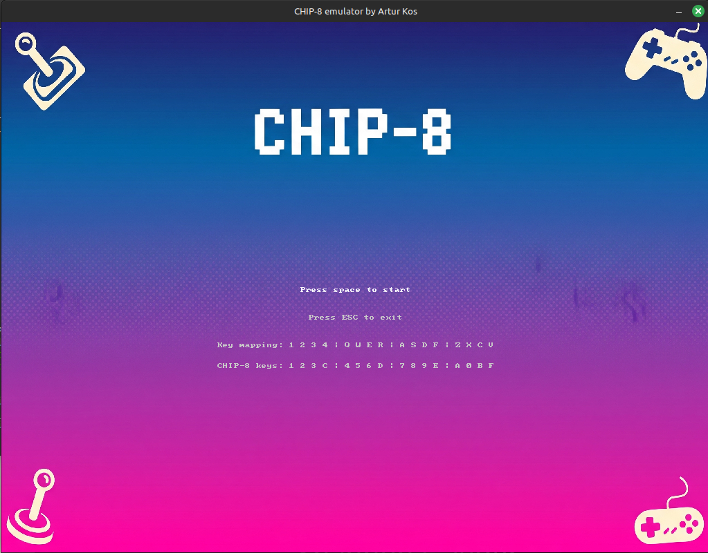

A faithful CHIP-8 virtual machine emulator that recreates the 1970s interpreter originally designed for the COSMAC VIP microcomputer. Built with C++17 and Allegro 5 for graphics, sound, and input handling, the emulator implements the complete CHIP-8 architecture including memory management, CPU registers, display rendering, timers, and keyboard input. It supports loading ROM files to run a variety of classic games.
Requirements: CMake (3.10+), Allegro 5
git clone https://github.com/ArturKos/CHIP-8.git cd CHIP-8 mkdir build && cd build cmake .. make
Check out the project on GitHub: CHIP-8 Emulator on GitHub
Back to Portfolio